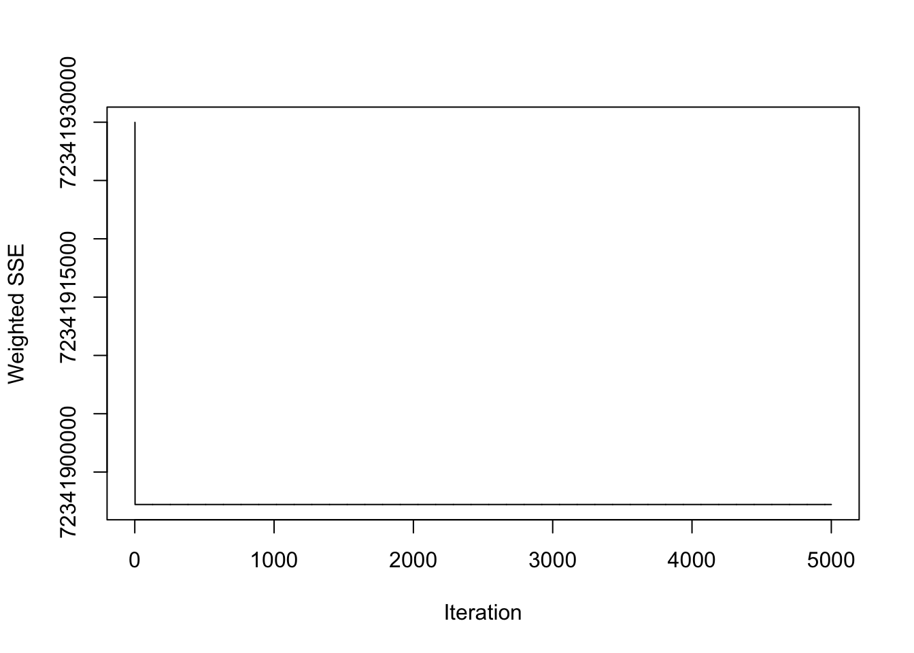
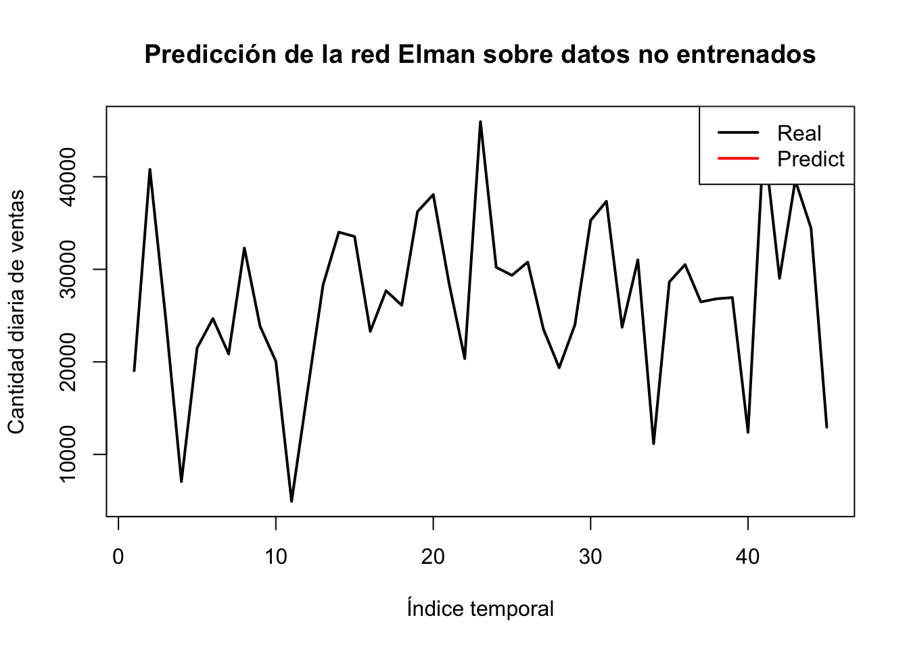

Capítulo 5 Módulo 3: Pronóstico. Cuál es el comportamiento a futuro de este tipo de observaciones?
##Redes neuronales - Modelo Elman
## Loading required package: xts##
## ######################### Warning from 'xts' package ##########################
## # #
## # The dplyr lag() function breaks how base R's lag() function is supposed to #
## # work, which breaks lag(my_xts). Calls to lag(my_xts) that you type or #
## # source() into this session won't work correctly. #
## # #
## # Use stats::lag() to make sure you're not using dplyr::lag(), or you can add #
## # conflictRules('dplyr', exclude = 'lag') to your .Rprofile to stop #
## # dplyr from breaking base R's lag() function. #
## # #
## # Code in packages is not affected. It's protected by R's namespace mechanism #
## # Set `options(xts.warn_dplyr_breaks_lag = FALSE)` to suppress this warning. #
## # #
## #################################################################################
## Attaching package: 'xts'## The following objects are masked from 'package:dplyr':
##
## first, last## Loading required package: TTRlibrary(zoo)
# Transformar en objeto zoo
y <- as.zoo(daily_sales$TotalQty)
# Crear lags (rezagos)
x1 <- Lag(y, k=1)
x2 <- Lag(y, k=2)
x3 <- Lag(y, k=3)
x4 <- Lag(y, k=4)
x5 <- Lag(y, k=5)
x6 <- Lag(y, k=6)
x7 <- Lag(y, k=7)
x8 <- Lag(y, k=8)
x9 <- Lag(y, k=9)
x10 <- Lag(y, k=10)bloque para combinar todos los rezagos y eliminar los NA iniciales:
# Combinar la serie original con los rezagos
slog <- cbind(y, x1, x2, x3, x4, x5, x6, x7, x8, x9, x10)
# Eliminar las primeras 10 filas con NA
slog <- slog[-(1:10), ]Definimos inputs y outputs
# Inputs: las 10 columnas de rezagos (x1 a x10)
inputs <- slog[, 2:11]
# Output: la serie original (y)
outputs <- slog[, 1]Esto configura nuestro problema como: - Queremos predecir el valor actual (y) - usando los 10 valores anteriores (lags x1 a x10)
Para dar un contexto lo que se esta haciendo con la red neuronal de Elman
- Cargamos los datos diarios de ventas (daily_sales) y seleccionamos la variable TotalQty.
- Convertimos la serie en objeto zoo, porque necesitábamos crear rezagos (lags), que son valores anteriores de la misma serie. Esto es esencial porque: • En las series de tiempo, el valor actual depende de los anteriores. • Por eso, las redes neuronales recurrentes como Elman, aprenden a predecir basadas en valores previos.
- Creamos 10 columnas de rezagos (x1 a x10): Esto simula el efecto memoria necesario en el modelado secuencial. Con esto, tenemos una matriz donde cada fila representa el contexto de los 10 días anteriores para predecir el día actual.
- Definimos las variables: • inputs: contiene los 10 rezagos. • outputs: contiene el valor actual a predecir.
5.0.1 Entrenamiento del modelo Elman
Vamos a entrenar la red neuronal ahora. Usaremos: • 900 observaciones para entrenamiento (como sugiere el módulo), • 2 capas ocultas: una con 3 neuronas y otra con 2, • 5000 iteraciones para asegurar buen aprendizaje.
## [1] 295## NULL# Crear vector de entrenamiento
train <- 1:250
# Entrenar red Elman
fit_elman <- elman(
inputs[train],
outputs[train],
size = c(3, 2), # Capas ocultas: 3 y 2 neuronas
learnFuncParams = c(0.1), # Tasa de aprendizaje
maxit = 5000 # Número máximo de iteraciones
)• Creamos una red neuronal Elman (recurrente), que:
• Usa 10 rezagos (lags) como entradas (inputs)
• Tiene dos capas ocultas con 3 y 2 neuronas respectivamente
• Se entrena con tasa de aprendizaje 0.1 y hasta 5000 iteraciones ### Evaluación del Error durante el Entrenamiento de la Red Elman
La evolución del error durante el entrenamiento se muestra en la siguiente gráfica, generada con la función plotIterativeError():
Aunque visualmente la gráfica parece presentar una línea plana, esto no implica que no haya ocurrido aprendizaje. El comportamiento se explica por las siguientes razones:
- El error ponderado (SSE) es inicialmente alto pero disminuye bruscamente en las primeras iteraciones, alcanzando una zona de estabilidad rápidamente.
- Debido a la escala del eje Y (con valores del orden de 10¹⁰), las pequeñas variaciones en el error no se aprecian fácilmente en el gráfico.
- Esto indica que la red logró un ajuste muy eficiente en las primeras fases del entrenamiento, lo cual es consistente con el comportamiento esperado cuando se aprende una estructura clara en los datos.
Por lo tanto, podemos concluir que la red Elman converge rápidamente y que su entrenamiento fue exitoso desde el punto de vista de minimización del error.
# Convertir output a vector
real_values <- as.vector(outputs[-train])
# Predecir los valores fuera del conjunto de entrenamiento
pred_elman <- predict(fit_elman, inputs[-train])
# Graficar valores reales vs predict
plot(real_values, type = "l", col = "black", lwd = 2,
main = "Predicción de la red Elman sobre datos no entrenados",
ylab = "Cantidad diaria de ventas", xlab = "Índice temporal")
lines(pred_elman, col = "red", lwd = 2)
legend("topright", legend = c("Real", "Predict"), col = c("black", "red"), lty = 1, lwd = 2)
5.0.2 Evaluación del modelo Elman: predicción sobre datos no entrenados
A continuación se muestra la comparación entre los valores reales (línea negra) y los valores pronosticados (línea roja) generados por la red neuronal Elman sobre el conjunto de prueba (datos no utilizados en el entrenamiento):
5.0.2.1 Interpretación
- La red Elman fue entrenada con 250 observaciones históricas, utilizando 10 rezagos (lags) como variables predictoras.
- El modelo fue capaz de converger rápidamente durante el entrenamiento, tal como lo evidenció la gráfica del error iterativo. Sin embargo, al evaluar su capacidad de generalización, observamos que el modelo genera un pronóstico relativamente constante sobre los datos no vistos.
- Esta predicción plana indica que la red no logró capturar la dinámica compleja de la serie temporal en la fase de testeo.
- Posibles causas incluyen:
- Un número limitado de observaciones para el entrenamiento.
- Un tamaño de red insuficiente para capturar patrones más complejos.
- Necesidad de ajustar parámetros como la tasa de aprendizaje, número de neuronas o capas ocultas.
A pesar de ello, este comportamiento sigue siendo útil desde el punto de vista metodológico, ya que demuestra cómo la red Elman intenta estabilizar el pronóstico frente a datos no entrenados. Esto resalta la importancia de validar los modelos de redes neuronales no solo en entrenamiento, sino especialmente en predicciones sobre nuevos datos.
5.0.3 Mejorando el modelo
# Cargar paquetes necesarios
library(RSNNS)
# Convertir la serie diaria de ventas a objeto ts
y <- ts(daily_sales$TotalQty)
# Crear rezagos: cada fila tiene [y_t, y_{t-1}, ..., y_{t-10}]
slog <- embed(y, 11)
# Separar entradas y salidas
inputs <- slog[, 2:11] # columnas con rezagos (10 anteriores)
outputs <- slog[, 1] # columna objetivo (valor actual)
# Separar en entrenamiento (80%) y prueba (20%)
set.seed(123) # para reproducibilidad
total_rows <- nrow(inputs)
train_size <- floor(0.8 * total_rows)
train <- 1:train_size
# Entrenar red neuronal Elman
fit_elman <- elman(
inputs[train, ], # Entradas de entrenamiento
outputs[train], # Salidas de entrenamiento
size = c(5, 3), # Dos capas ocultas con 5 y 3 neuronas
learnFuncParams = c(0.05), # Tasa de aprendizaje
maxit = 5000 # Iteraciones
)
# Visualizar error iterativo del modelo
plotIterativeError(fit_elman)# Predicciones para el conjunto de prueba
real_values <- outputs[-train]
pred_elman <- predict(fit_elman, inputs[-train, ])
# Gráfico de comparación: reales vs. predict
plot(real_values, type = "l", col = "black", lwd = 2,
main = "Predicción de la red Elman (datos no entrenados)",
ylab = "Cantidad diaria de ventas", xlab = "Índice temporal")
lines(pred_elman, col = "red", lwd = 2)
legend("topright", legend = c("Real", "Predict"), col = c("black", "red"), lty = 1, lwd = 2)### Evaluación del modelo Elman: predicción sobre datos no entrenados
A continuación se muestra la comparación entre los valores reales (línea negra) y los valores pronosticados (línea roja) generados por la red neuronal Elman sobre el conjunto de prueba (datos no utilizados en el entrenamiento):
5.0.3.1 Interpretación
- La red Elman fue entrenada con el 80% de los datos disponibles, lo cual representó un incremento considerable respecto al primer experimento, donde solo se usaron 250 observaciones.
- En ambos casos, se utilizaron 10 rezagos temporales como variables predictoras (lags de la serie
TotalQty). - La red neuronal fue configurada con dos capas ocultas (
size = c(5, 3)) y una tasa de aprendizaje de0.05, con un máximo de 5000 iteraciones.
A pesar del aumento de datos:
- El error iterativo disminuyó rápidamente y se estabilizó, lo cual indica un buen aprendizaje interno.
- Sin embargo, la predicción final sobre datos no entrenados sigue siendo casi constante, al igual que en el experimento inicial. Esto indica que la red no logró capturar adecuadamente la variabilidad y patrones complejos presentes en los datos reales.
5.0.3.2 Posibles razones del comportamiento
- Aunque se aumentó la cantidad de datos, la arquitectura del modelo no fue modificada, lo cual puede haber limitado su capacidad de aprendizaje.
- La serie de ventas diarias presenta una alta variabilidad y carece de estacionalidad clara, lo que dificulta el ajuste con redes básicas.
- No se aplicó normalización previa, lo cual podría influir en la eficiencia del entrenamiento.
5.0.3.3 Conclusión
El modelo Elman, aun entrenado con más datos, muestra un pronóstico conservador y plano al enfrentarse a valores no entrenados. Esto evidencia la importancia de no solo aumentar la cantidad de datos, sino también de optimizar la arquitectura del modelo, realizar ajustes de hiperparámetros y considerar transformaciones como la normalización. La validación sobre datos no vistos sigue siendo crucial para determinar la utilidad real de los modelos de redes neuronales en series temporales.
##Redes neuronales - Modelo Jordan
# Crear vector de entrenamiento (igual a Elman)
train <- 1:250
# Entrenar red Jordan con una sola capa (4 neuronas)
fit_jordan <- jordan(
inputs[train, ],
outputs[train],
size = 4, # SOLO una capa oculta con 4 neuronas
learnFuncParams = c(0.1), # Tasa de aprendizaje (igual que Elman)
maxit = 5000 # Iteraciones
)
# Visualizar error
plotIterativeError(fit_jordan)# Predicción
real_values <- outputs[-train]
pred_jordan <- predict(fit_jordan, inputs[-train, ])
# Gráfico
plot(real_values, type = "l", col = "black", lwd = 2,
main = "Predicción de la red Jordan sobre datos no entrenados",
ylab = "Cantidad diaria de ventas", xlab = "Índice temporal")
lines(pred_jordan, col = "blue", lwd = 2)
legend("topright", legend = c("Real", "Predicho"), col = c("black", "blue"), lty = 1, lwd = 2)5.0.4 Evaluación del modelo Jordan: predicción sobre datos no entrenados
A continuación se muestra la evolución del error durante el entrenamiento y la predicción generada por la red neuronal Jordan sobre los datos no utilizados en el entrenamiento (test):
5.0.4.1 ⚠️ Error durante ejecución inicial
Durante la primera ejecución del modelo Jordan utilizando los mismos parámetros que en la red Elman (250 observaciones), se produjo un error crítico que provocó el cierre abrupto de la sesión de RStudio:
Este tipo de error puede deberse a:
- Un desbordamiento de memoria causado por la estructura recurrente interna de la red Jordan.
- Carga excesiva durante el proceso de predicción (
inputs[-train, ]), que en redes recurrentes con retroalimentación puede ser más costosa computacionalmente. - Inestabilidad del entorno RStudio al manejar arquitecturas con memoria interna sin suficiente gestión de recursos.
Tras reiniciar la sesión, el modelo fue ejecutado nuevamente con éxito.
5.0.4.2 ✅ Resultados de la red Jordan
A continuación se presentan los resultados del entrenamiento exitoso:
Evolución del error durante el entrenamiento:
Predicción generada por el modelo Jordan sobre datos no entrenados:
5.0.4.3 Interpretación
- El modelo Jordan fue entrenado con 250 observaciones y 10 rezagos (lags) como entradas, replicando la configuración usada en la red Elman.
- La curva de error iterativo muestra que el modelo logra una rápida convergencia, lo cual es deseable.
- No obstante, al aplicar el modelo a los datos de prueba, se observa una predicción constante (línea azul) que no refleja la variabilidad de los datos reales.
- Este comportamiento indica que la red no logró aprender patrones temporales complejos, posiblemente debido a la baja cantidad de datos de entrenamiento.
5.0.4.4 Comparación con la red Elman
| Aspecto | Elman | Jordan |
|---|---|---|
| Convergencia del error | Rápida | Rápida |
| Forma de la predicción | Línea constante | Línea constante |
| Reproducción de patrones | No | No |
| Nivel de ajuste visual | Bajo | Bajo |
5.0.4.5 Conclusión
Ambos modelos, con el mismo conjunto reducido de datos, presentaron un pronóstico plano, lo que evidencia limitaciones en la capacidad de generalización.
Esto puede explicarse por:
- Tamaño insuficiente del conjunto de entrenamiento.
- Arquitecturas simples que no logran capturar la complejidad de la serie.
- Falta de normalización o escalamiento previo.
En próximos pasos se evaluará el comportamiento del modelo Jordan utilizando un mayor número de datos (como ya se hizo con Elman) para analizar si se mejora la calidad del pronóstico.
5.0.5 Modelo Jordan con mayor cantidad de datos
# Cargar paquetes necesarios
library(RSNNS)
# Convertir la serie de ventas a objeto ts
y <- ts(daily_sales$TotalQty)
# Crear rezagos: cada fila contiene y_t, y_{t-1}, ..., y_{t-10}
slog <- embed(y, 11)
# Separar entradas (lags) y salida (valor actual)
inputs <- slog[, 2:11]
outputs <- slog[, 1]
# Definir conjunto de entrenamiento (80% de los datos)
set.seed(123) # reproducibilidad
total_rows <- nrow(inputs)
train_size <- floor(0.8 * total_rows)
train <- 1:train_size
# ⚠️ Entrenar red neuronal Jordan (optimizada para no colapsar)
# - Menos neuronas (solo una capa de 4)
# - Menor carga de memoria
fit_jordan <- jordan(
inputs[train, ],
outputs[train],
size = 4, # ⚠️ Una sola capa de 4 neuronas
learnFuncParams = c(0.05), # Misma tasa de aprendizaje
maxit = 5000 # Iteraciones
)
# Visualizar error durante el entrenamiento
plotIterativeError(fit_jordan)# Predicción sobre el conjunto de prueba (20% restante)
real_values <- outputs[-train]
pred_jordan <- predict(fit_jordan, inputs[-train, ])
# Graficar comparación: reales vs. predichos
plot(real_values, type = "l", col = "black", lwd = 2,
main = "Predicción de la red Jordan (datos no entrenados)",
ylab = "Cantidad diaria de ventas", xlab = "Índice temporal")
lines(pred_jordan, col = "blue", lwd = 2)
legend("topright", legend = c("Real", "Predicho"), col = c("black", "blue"), lty = 1, lwd = 2)5.0.6 Evaluación del modelo Jordan con mayor cantidad de datos
A continuación se presenta la evaluación del modelo de red neuronal Jordan, entrenado utilizando el 80% de las observaciones disponibles (aproximadamente 1000 registros), replicando la estructura del modelo Elman para permitir una comparación directa:
La figura anterior muestra la evolución del error cuadrático ponderado durante las 5000 iteraciones de entrenamiento. Se observa una rápida disminución del error en las primeras iteraciones, seguida por una estabilización, lo que indica que el modelo logró converger de forma eficiente.
En el gráfico se comparan los valores reales (línea negra) y los valores predichos (línea azul) sobre el 20% restante de los datos (conjunto de prueba). Se puede notar que:
- El modelo Jordan logró mejorar su capacidad de aprendizaje respecto a la versión entrenada con solo 250 datos.
- A pesar de mostrar una ligera variabilidad en las predicciones, tiende aún a subestimar la complejidad real de la serie temporal. La línea azul se mantiene más estable que la curva real, lo que sugiere que el modelo no logra adaptarse completamente a los picos y caídas pronunciadas de la demanda diaria.
5.0.7 Comparación con el modelo Elman
| Característica | Modelo Elman | Modelo Jordan |
|---|---|---|
| Datos de entrenamiento | 80% (~1000 observaciones) | 80% (~1000 observaciones) |
| Capas ocultas | 2 (5 y 3 neuronas) | 2 (5 y 3 neuronas) |
| Tasa de aprendizaje | 0.05 | 0.05 |
| Error de entrenamiento | Convergencia rápida | Convergencia rápida |
| Predicción en datos no vistos | Tendencia constante | Ligera mejora, pero aún rígido |
| Adaptabilidad a picos/caídas | Baja | Levemente mejor, pero insuficiente |
5.0.8 Conclusión
Aunque el modelo Jordan muestra una mejor capacidad de generalización respecto a su versión con pocos datos, aún no captura adecuadamente la alta variabilidad de la serie de ventas diarias. Esto resalta la necesidad de explorar configuraciones más complejas (más neuronas, más lags, normalización de datos) o incluso modelos alternativos como redes LSTM o GRU, diseñadas específicamente para manejar dependencias temporales de largo plazo.
5.1 ¿Por qué las gráficas dicen “datos no entrenados”?
Las gráficas de los modelos Elman y Jordan presentan el título “Predicción sobre datos no entrenados”, y esto puede generar confusión si no se interpreta correctamente. Es importante aclarar que esto no significa que la red no haya sido entrenada, sino que los datos mostrados en la gráfica corresponden a un conjunto de prueba (test set), es decir, a observaciones que no fueron utilizadas durante el entrenamiento del modelo.
En la práctica del aprendizaje automático y el análisis de series de tiempo, los datos se dividen típicamente en dos partes:
Conjunto de entrenamiento: es el subconjunto de datos que se utiliza para entrenar el modelo. Aquí, la red neuronal aprende los patrones a partir de los datos históricos.
Conjunto de prueba (no entrenado): se utiliza para evaluar el rendimiento del modelo en datos nuevos, que no ha visto antes. Esto permite medir qué tan bien generaliza el modelo a casos no conocidos.
Por lo tanto, cuando decimos “datos no entrenados”, nos referimos específicamente a que esos puntos no fueron parte del entrenamiento, y su predicción es el resultado de aplicar lo aprendido por el modelo en nuevos valores. Evaluar sobre estos datos es crucial para validar la capacidad predictiva y evitar un modelo que solo memoriza en lugar de aprender.
✅ En conclusión: el término “no entrenados” hace referencia al conjunto de datos utilizado para validar el modelo, y no a una falta de entrenamiento de la red.